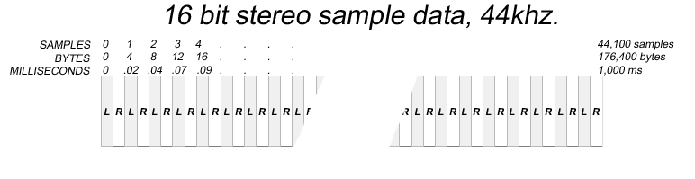

FMOD API User Manual 2.01
A 3D sound source is a Channel that has a position and a velocity in space. When a 3D Channel is playing, its volume, speaker placement and pitch will be affected automatically based on the relation to the listener.
A listener is typically the location of the player or the game camera. It has a position and velocity like a sound source, but it also has an orientation.
3D Sound behaviour:
2D Sound behaviour:
Note: You can blend between a 3D mix and a 2D mix with ChannelControl::set3DLevel.
For a more detailed description of 3D sound behaviour, read the tutorial on the topic.
Only one callback is stored for each System/Studio::System/Studio::EventInstance/ChannelControl. Therefore, any registered callback should handle all required callback types and indicate those types via the callback type mask.
All calls to callbacks are issued per type. This means that if, for example, you use System::setCallback with FMOD_SYSTEM_CALLBACK_ALL, when the callback is called, only one type will be passed for the type argument. Multiple types will not be combined for a single call.
C/C++ behavior. Casting your own function type to an FMOD callback could cause a crash or corruption. For callback declaration always use the F_CALLBACK between the return type and the function name, and use the correct C types for all callback parameters.
A channel group allows attributes to be set on a group of channels collectively. A channel group also allows you to operate on a the final mixed signal of the output of its channels and child channel groups. This is known as a 'sub mix'.
A channel group can be created with System::createChannelGroup which returns a ChannelGroup object.
The sub mix buffer can be processed with DSP effects (see ChannelControl::addDSP), saving CPU time compared to applying the same effect to multiple channels individually.
The signal processing of a channel group will persist even when a channel has stopped.
Note that a channel group can contain many children channel groups, but can only have one parent channel group. See ChannelGroup::addGroup and ChannelGroup::getParentGroup.
A channel is a playing instance of a sound.
After loading or creating a sound, it is playable via the System::playSound command which returns a Channel object for run-time manipulation of its properties.
FMOD automatically selects a channel for the sound to play on, you do not have to manage your own channels.
Set the maximum number of channels playable with System::init. For more information on Channels and how they can be real or virtual, go to the Virtual Voices tutorial.
Parent topic : Sound
Compressed Samples are suited for small sounds that need to be played more than once at a time, for example sound effects.
Only certain file formats are supported with this type of sound. File formats such as .MP2, .MP3, and .FSB (using FADPCM, Vorbis, AT9 and XMA codecs).
This type of sound is stored in memory in its native compressed format, and decodes in real-time while playing.
Use FMOD_CREATECOMPRESSEDSAMPLE to create a Sound object in this mode.
| Compressed Sample attributes | Comparison |
|---|---|
| Keeps sound compressed into memory. | Can use less memory than a sample, large sounds can use more than a stream. |
| Higher CPU overhead during playback. | Uses more CPU than a sample, slightly less than a stream. |
| Fast to load. | Faster than a sample, possibly slower than a stream with very large sounds. |
| Can play more than 1 at a time. | Better polyphony than a stream. |
Note: Compressed samples have a context allocated for each instance of playback. This requires a fixed start up memory overhead. See FMOD_ADVANCEDSETTINGS to control codec maximums.
| Token | Meaning |
|---|---|
| Out | The API function will fill in information in this parameter. |
| Opt | This parameter is optional, specify null or zero to ignore. |
| R/O | This token applies to members of various structures which FMOD passes to user callbacks. User callbacks must not modify the values of these members. Modifying the values of these members will cause undefined behavior. |
| C# | This is only available in C#. |
| JS | This is only available in Javascript. |
The unit of measurement for distances for 3D calculations. By default 1 disance unit is equivalent to 1 meter. To use your game's distance units specify the scale of your game's distance units to meters using System::set3DSettings.
A DSP chain is a collection of DSP units that connect together in a linear fashion. Each Channel and ChannelGroup contain a DSP chain.
A DSP is capable of multiple inputs, but in a DSP chain each DSP is connected to the next with one input, all the way from the head to the tail. See FMOD_CHANNELCONTROL_DSP_INDEX for special named offsets for 'head' and 'tail' and 'fader' units.
A typical Channel represented above with a 'head' (of type FMOD_DSP_TYPE_FADER to allow volume control and panning), which is fed by an echo effect (of type FMOD_DSP_TYPE_ECHO) which is in turn fed by a PCM wavetable unit (of type that is internal to FMOD).
The signal feeds from right to left to the DSP chain's head, before continuing to the next connected DSP (not pictured).
DSP stands for "Digital Signal Processing", and usually relates to processing raw PCM samples to alter the sound.
FMOD provides a suite of DSP effects that can alter the sound in interesting ways to simulate real life or exaggerate a sound.
Examples of this are echo, reverb, lowpass filtering, flange and chorus.
Effects can easily be added to an FMOD channel, or a sub mix, or ChannelGroup with the ChannelControl::addDSP function.
You also have the option of writing your own effects with System::createDSP. See the DSP Architecture and Usage tutorial for more.
Handedness is an innate property of 3D cartesian coordinate systems. The handedness of the coordinate system specifies the direction of the Z axis along the line perpendicular to the X and Y axes, and the direction of positive rotations.
For 3D spatialization to behave intuitively it is important that FMOD is configured to use the same orientation as your game's coordinate system.
By default FMOD uses a left-handed coordinate system. The positive Y axis points up, the positive X axis points to the right, and the positive Z axis points away from the listener. Positive rotations are clockwise around the axis of rotation when viewed so that the axis points towards the listener.
FMOD may also be configured to use a right-handed coordinate system by passing FMOD_INIT_3D_RIGHTHANDED to System::init. When configured for a right-handed coordinate system the positive Y axis points up, the positive X axis points to the right, and the positive Z axis points towards the listener. Positive rotations are counter-clockwise around the axis of rotation when viewed so that the axis points towards the listener.
Sample data is raw (PCM) or a compressed audio signal, stored as a sound.
When accessing raw data in a sound, it will be in the native endianness of the platform. See Sound::lock, Sound::unlock.
When a sound file is loaded, FMOD will convert the endian to match the native endian of the platform.
Sample data can come in a variety of PCM bit depths (8,16,24,32) and types (integer, float), or as a compressed bitstream. See FMOD_SOUND_FORMAT.
Within FMOD functions you will see references to PCM samples, bytes and milliseconds.
To understand what the difference is a diagram has been provided to show how raw PCM sample data is stored in FMOD buffers.

In this diagram you will see that a stereo sound has its left/right data interleaved one after the other.
A left/right pair (a sound with 2 channels) is called a sample.
Because this is made up of 16bit data, 1 sample = 4 bytes.
If the sample rate, or playback rate is 44.1khz, or 44100 samples per second, then 1 sample is 1/44100th of a second, or 1/44th of a millisecond. Therefore 44100 samples = 1 second or 1000ms worth of data.
To convert between the different terminologies, the following formulas can be used:
Some functions like Sound::getLength provide the length in milliseconds, bytes and samples to avoid needing to do these calculations.
Parent topic : Sound
Samples (also referred to as 'decompress into memory' type sounds), are suited for small sounds that need to be played more than once at a time, for example sound effects.
Use FMOD_CREATESAMPLE to create a Sound object in this mode.
| Sample attributes | Comparison |
|---|---|
| Decompresses whole sound into memory. | Can use more memory than a compressed sample or stream. |
| Low CPU overhead during playback. | Uses less CPU than a compressed sample or stream. |
| Slower to load. | Can take longer to load on large sounds than a compressed sample or stream. |
| Can play more than 1 at a time. | Better polyphony than a stream. |
Mobile Developers: A common use for this format is to store files compressed on disk (for faster download speed), then decompress into memory at load time, for lower cpu overhead at run-time.
A sound is an instance of sample data which can be loaded from media, or created from memory.
When a sound is loaded, it is either decompressed as a static sample into memory as PCM (sample), loaded into memory in its native format and decompressed at runtime (compressed sample), or streamed and decoded in realtime (in chunks) from an external media such as a disk or internet (stream).
For more detail see:
A sound can be created with System::createSound or System::createStream which returns a Sound object. A Sound object can be played with System::playSound.
Parent topic : Sound
A stream is good for a sound that is too large to fit into memory. A stream reads from disk or other media like the internet as it plays.
Typically suited to larger sounds like music, long ambiences, or voice.
Use FMOD_CREATESTREAM to create a Sound object in this mode.
| 'Stream' attributes | Comparison |
|---|---|
| Uses a small buffer in memory. | Uses less memory than a sample or compressed sample on large sounds. |
| Higher CPU overhead during playback. | Uses more CPU than sample, slightly more than a compressed sample due to simultaneous reading from medium. |
| Fast to load. | Faster than a sample on large sounds, possibly faster than a compressed sample with very large sounds. |
| Can only be played once at a time. | Worse polyphony than a sample or compressed sample. |
Note: A very small sound may use more memory than a sample or compressed sample when created as a stream, due to the stream file/decode buffer overhead being bigger than the size of the sound.
Bandwidth
Streaming audio from a medium should be kept to a limited number of instances, to avoid starvation of data leading to skipping / stuttering audio.
Increasing stream memory buffer sizes can help to mitigate this problem. See System::setStreamBufferSize and FMOD_ADVANCEDSETTINGS::defaultDecodeBufferSize.
Speed of commands using streams
System::createStream, Channel::setPosition and Sound::getSubSound when using a stream can take longer than an in memory sample, as they have to initialize internal buffers and flush them from disk.
Use FMOD_NONBLOCKING command to remove the cost from the main thread and put the overhead into a background thread.
Setting loop counts or points of a playing stream
Issues with looping streaming sounds may arise when changing the loop count or loop points of a playing stream.
Sounds created with System::createStream or FMOD_CREATESTREAM may have executed loop logic and buffered sample data before API calls to change their looping properties. If issues occur after changing loop properties you may need to call Channel::setPosition to force a flush of the stream buffer.
Note this will usually only happen if you have sounds or loop regions which are smaller than the stream decode buffer. See FMOD_CREATESOUNDEXINFO.
All FMOD Public APIs and structures use UTF-8 strings.
As C# uses UTF-16 strings by default, the FMOD C# api function parameters will automatically convert between UTF-16 and UTF-8 strings in any api using the C# "string" type or FMOD's "StringWrapper" type. However, any API that uses strings via an IntPtr will not automatically convert from UTF-16, and will instead expect a UTF-8 string to be used.
Many functions in the FMOD Studio API allow you to identify an object within an FMOD Studio project by the object's globally unique identifier, or GUID. These API functions will accept the GUID in binary format (mostly useful when an object's GUID has been looked up programmatically by name), or as a string formatted as 32 digits separated by hyphens and enclosed in braces: {00000000-0000-0000-0000-000000000000}.
Many functions in the FMOD Studio API allow you to identify an object within an FMOD Studio project by the object's path. Objects can only be identified by path if the project's strings bank is loaded.
See the FMOD Studio Documentation for more information.
When building a master bank FMOD Studio will also write out a strings bank for the project. The strings bank contains a string table which the FMOD Studio API can use to resolve GUIDs from paths. FMOD Studio API functions which accept paths require the project's strings bank to be loaded in order to function correctly.
A thread created by the FMOD Studio System to perform asynchronous processing of API commands and manage scheduling and playback logic for events. This thread is triggered from the Core Mixer thread at the period specified in the FMOD_STUDIO_ADVANCEDSETTINGS. If the Studio System is initialized with FMOD_STUDIO_INIT_SYNCHRONOUS_UPDATE then no Studio Update thread is created.
A sync point can be used to trigger a callback during playback. See FMOD_CHANNELCONTROL_CALLBACK_SYNCPOINT.
These points can be user generated via the API or can come from a .wav file with embedded markers.
Markers can be added to a wave file in a sound editor usually by clicking on a waveform or timeline and inserting a 'marker' or 'region'.
Any RIFF based format will support sync points.
Sync points can be manipulated with: